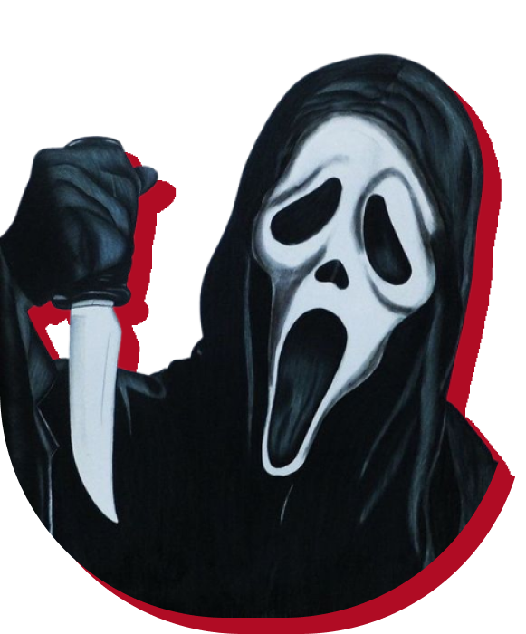

Scary
movies
Populares do ano
Porque esse sucesso?
Os lançamentos de terror de 2024, como Imaculada, Longlegs e MaXXXine, compartilham a habilidade de explorar temas profundos e de impactar visualmente o público, o que pode explicar seu sucesso. Cada um deles vai além do terror convencional. Imaculada combina terror psicológico com uma narrativa de empoderamento feminino, abordando questões pessoais e sobrenaturais. Longlegs, com Nicolas Cage, se destaca por sua atmosfera perturbadora e estética visual estilosa, misturando suspense com elementos investigativos. MaXXXine, por sua vez, além do horror slasher, oferece uma crítica à cultura de celebridades dos anos 1980, trazendo o estilo ousado característico da trilogia. O que une esses filmes é o uso inteligente de temas sociais e culturais dentro de tramas de horror, proporcionando uma experiência cinematográfica imersiva e reflexiva.
Curiosidades sobre a sua franquia de terror favorita
A franquia Pânico é adorada pelo público por seu tom metalinguístico e humor inteligente, brincando com os clichês dos filmes de terror. A máscara icônica de Ghostface foi inspirada na pintura "O Grito", de Edvard Munch, e descoberta por acaso em uma casa abandonada. Nos bastidores, o título original era Scary Movie, mas foi alterado para Scream. O filme também revitalizou o gênero nos anos 90, ao usar personagens que discutem as "regras" do terror.
TOP 5 filmes mais
assustadores
Um clássico do terror, conhecido por sua atmosfera opressiva e cenas aterrorizantes. A história de uma jovem possuída por um demônio é considerada uma das mais assustadoras de todos os tempos.

Este filme moderno de terror psicológico é aclamado por seu impacto emocional e cenas perturbadoras. Ele explora o luto e traumas familiares de forma assustadora.
Baseado na obra de Stephen King, este filme é famoso por suas cenas visualmente inquietantes e a atuação de Jack Nicholson, criando um clima de terror psicológico.
Baseado em eventos reais, este filme sobre uma investigação paranormal aterrorizou audiências com sua tensão crescente e sustos bem construídos.
Combinando terror sobrenatural e um enredo de possessão, este filme criou alguns dos sustos mais memoráveis e inesperados do gênero.